I√n¬ \n∂v teml-Øn-te°v
21
21
21
I√n¬ \n∂v teml-Øn-te°v
CØcw khn-ti-j-X-I-fp≈ D]-I-c-W-ßfpw Bbp-[-ßfpw D]-tbm-Kn®
Ime-L-´sØ \ho-\-in-em-bpKw F∂p hnfn-°p-∂p. \ho-\-in-em-
bpKØnem-I-s´, a\p-jy-Po-hn-X-Øn¬ kaq-e-amb am‰-߃ D≠m-bn.
Cu am‰-߃ kqNn-∏n-°p∂ Nn{X-ß-fmWv NphsS \¬In-bn-cn-°p-∂Xv:
\ho-\-in-em-bp-K-Ønse a\p-jy-Po-hn-Xw-˛-Nn-{X-Im-cs‚ `mh-\-bn¬
Nn{X-Øn¬\n∂v \ho-\-in-em-bp-K-Ønse a\p-jy-PohnXsØ-°p-dn®v
Fs¥√mw Is≠Ømw?
$
Irjn sNbvXp
$
hmk-ÿ-e-߃ D≠m°n
$
arK-ßsf CW-°n-h-f¿Øn
$
$
{]mNo-\-in-em-bp-K-Øn¬ \n∂v \ho-\-in-em-bpKw Fß-s\-
sb√mw hyXym-k-s∏-´n-cn-°p∂p?
Page 21
Page 22
kmaq-ly-imkv{Xw V
2222
22
kmaq-ly-imkv{Xw V
sh¶-e-bpKw (Bronze Age)
]n¬°m-eØv inem-bp-[-ß-tfm-sSm∏w sNºv (Xm{aw) sIm≠p≈
D]IcW-ßfpw a\p-jy¿ D]-tbm-Kn®p XpS-ßn. I√ns\ At]-£n®v
IqSp-X¬ aq¿®-s∏-Sp-Øm-hp-∂Xpw cq]-am‰w hcp-Øm-hp-∂Xpw kuIcy-
{]-Z-ambn D]-tbm-Kn-°m≥ Ign-bp-∂-Xp-am-bn-cp∂p sNºv. I√p-sIm≠pw
sNºp-sIm-≠p-ap≈ D]-I-c-W-ßfpw Bbp-[-ßfpw D]-tbm-Kn-®n-cp∂
Ime-L´w Xm{a-in-em-bpKw (Chalcolithic age) F∂-dn-b-s∏-Sp-∂p.
XpS¿∂v, Cubw Is≠-Øp-Ibpw Cubhpw sNºpw Dcp-°n-t®¿Øv
sh¶ew (HmSv) F∂ teml-k-¶cw \n¿an-°p-Ibpw sNbvXp. sh¶ew
sNºn-t\-°mƒ ISp-∏-ap-≈-Xm-bn-cp-∂p.
Bbp-[-ßfpw D]-I-c-W-ßfpw D≠m-°m≥ sh¶ew D]-tbm-Kn® Imew
sh¶-e-bpKw F∂v Adn-b-s∏-Sp-∂p.
{]mNo-\-Im-esØ a\p-jy-Po-hn-X-hp-ambn _‘-s∏´v NphsS X∂n-´p≈
^vtfmNm¿´v ]q¿Øn-bm-°pI:
Xm{a-in-em-bpKw
{]mNo\ inem-bpKw
sh¶-ew-sIm-≠p≈ Bbp-[-ß-fpsSbpw D]-I-c-W-ß-fp-sSbpw D]-tbmKw
a\p-jy-Po-hn-X-Øn¬ Fs¥√mw am‰-ß-fmWv hcp-Øn-b-sX∂v t\m°mw.
Cu Ime-L-´-Øn¬ Irjn sa®-s∏-Sp-Ibpw Im¿jn-tIm¬∏m-Z-\-Øn¬
h¿[-\-hp-≠m-hp-Ibpw sNbvXp. \Zo-X-S-ß-fnse ^e-`q-bn-jvT-amb aÆpw
\Zn-I-fn¬ \n∂p≈ Pe-hp-amWv CØ-c-Øn-ep≈ Im¿jn-I- an-I-hn\v
Imc-W-am-b-Xv.
Page 23
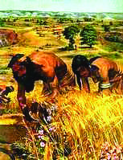
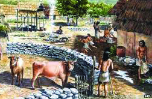
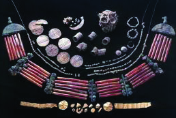
I√n¬ \n∂v teml-Øn-te°v
23
23
23
I√n¬ \n∂v teml-Øn-te°v
Irjn sa®-s∏-´-t∏mƒ D≠mb am‰-
߃ Fs¥-√m-am-bn-cn°pw?
$
A[n-I-ambn D¬∏m-Zn-∏n® `£y-
h-kvXp-°ƒ kw`-cn-°m≥
XpSßn.
$
Im¿jnIhn`-h-߃ ssIam‰w
sNøm-\p≈ s]mXp-ÿ-e-߃
cq]w-sIm-≠p.
$
]pXnb Im¿jn-tIm-]-I-c-W-ß-
fpsS \n¿Ωm-Whpw D]-tbm-
Khpw h¿[n-®p.
{]mNo-\-Im-esØ Irjn ˛
Nn{X-Im-cs‚ `mh-\-bn¬
Irjn-tbm-sSm∏w hnImkw {]m]n® a‰p sXmgn¬ta-J-e-Iƒ GsX√mw?
Nn{X-߃ \nco-£n®v Is≠-Øp.
Page 24
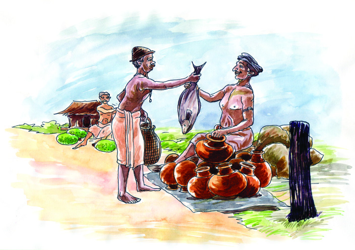
kmaq-ly-imkv{Xw V
2424
24
kmaq-ly-imkv{Xw V
Dev]-∂-߃ ssIam‰w sNøp∂p ˛
Nn{X-Im-cs‚ `mh-\-bn¬
\n߃ Is≠-Øn-bh IqSmsX Xmsg-∏-dbp-∂-hbpw A°m-eØv
hnImkw {]m]n® sXmgn¬ ta-J-e-I-fmWv:
$
CjvSn-I-\n¿amWw
$
XpWn-s\bvØv
Hcp sXmgn¬ ta-J-e-bn¬ {]h¿Øn°p∂-h¿°v a‰p sXmgn¬ taJ-e-I-
fn-ep-≈-h-cpsS tkh-\-ßfpw D¬∏m-Zn-∏n-°p∂ hn`-h-ßfpw Bh-iy-am-
bn-cp-∂p. CXv D¬∏-∂-ß-fpsS ssIam-‰-Øn\v Imc-W-am-bn. CØcw
ssIam-‰-߃ kaq-l-Øn¬ ]ckv]-cm-{i-bXzw hf¿Øn. D¬∏m-Zn-∏n-
°p∂ hn`-h-߃ hnZqc {]tZi-ß-fn-te°v Ib‰n Ab-®p. Ic-am¿§hpw
IS¬am¿Khpw I®hS-_‘߃ hf¿∂p. AXns‚ `mK-ambn KXm-
KX kuI-cy-߃ hnIkn®p. Cu {]h¿Ø-\-ßsf \nb-{¥n-°p-∂-Xn-
\mbn `c-W-kwhn[m\-߃ cq]-s∏-´p. C°m-eØv Fgp-Øp-hn-Zybpw
cq]-s∏-´n-cp∂p.
CØcw khn-ti-j-X-I-tfmsS hnhn[ \Zo-X-S-ß-fn¬ {]mNo\ \K-c-߃
hnI-kn®ph∂p. Ch-bmWv sh¶-e-bp-K-kw-kvIm-c-ß-fpsS tI{μ-߃.
satkm-s∏m-t´-an-b≥ kwkvImcw
bq{^-´o-kv-˛-ssS-{Kokv \Zo-X-S-ß-fn-emWv satkm-s∏m-t´-an-b≥
kwkvImcw \ne-\n-∂n-cp-∂-Xv. c≠p \Zn-Iƒ°nS-bn-ep≈ {]tZiw
F∂mWv satkm-s∏m-t´-anb F∂ hm°ns‚ A¿∞w. Cu {]tZiw
Page 25
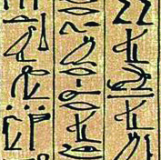
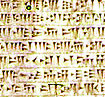
I√n¬ \n∂v teml-Øn-te°v
25
25
25
I√n¬ \n∂v teml-Øn-te°v
IyqWnt^mw en]n
]pcm-X-\-amb Fgp-Øp-en-]n-I-fn¬ H∂mWv
IyqWnt^mw en]n. kpta-dn-emWv CXv Bcw-`n-
®-Xv. B∏ns‚ cq]-Øn-ep≈ (Wedge shaped)
Nn{X-en-]n-bm--Wn-Xv. Fgp-Øp-{]-Xew Ifn-a¨
]mfn-I-fm-bn-cp-∂p.
knKp-dm-Øp-Iƒ
knKp-dm-Øp-Iƒ tZhm-e-b-k-ap-®-b-ß-
fmWv. CXns‚ ]pdw-`mKw Nps´-SpØ
CjvSn-I-Iƒ sIm≠mWv \n¿Ωn-®n-cn-°p-
∂-Xv. Ccp-]-Ø-t©mfw knKpdmØp-Iƒ
Cu {]tZ-i-ß-fn¬ \n¿Ωn-°-s∏-´-Xmbn
Is≠-Øn-bn-´p-≠v. Ch-bn¬ "D¿' F∂
\K-c-Ønse knKp-dmØv C∂pw kwc-£n-
°-s∏-Sp-∂p.
CuPn-]vjy≥ kwkvImcw
ss\¬ \Zo-X-S-Øn-emWv CuPn-]vjy≥ kwkvImcw hf¿∂p-h-∂-Xv.
CuPn-]vXns\ "ss\ens‚ Zm\w' F∂v hnti-jn-∏n-°p-∂p. ssltdm-•n-
^nIvkv en]n CuPn-]vXn-emWv cq]w sIm≠-Xv. temI-{]-kn-≤-ß-fmb
]nc-an-Up-Iƒ Cu kwkvIm-c-Øns‚ tijn-∏p-I-fm-Wv.
Dƒs∏-Sp-∂-XmWv C∂sØ Cdm-Jv. IyqWnt^mw en]n satkm-s∏m-t´-an-
b-bn-emWv cq]wsIm≠-Xv. Cu kwkvIm-c-Øns‚ tijn-∏p-I-fmWv knKp-
dm-Øp-Iƒ.
ssltdm-•n-^nIvkv en]n
]pcm-X\ CuPn-]vXp-Im¿ D]-tbm-Kn-®n-cp∂
en]n-bmWv ssltdm-•n-^n-Ivkv. Nn”-cq-]hpw
A£-c-cq-]hpw Iq´n-t®¿Ø-XmWv Cu en]n.
XSnbpw ]m]n-dkpw BWv Fgp-Xp-hm≥ D]-tbm-
Kn-®n-cp∂ {]Xew.
KT 103-3/Soc. Science-5(M) Vol-1
Page 26
kmaq-ly-imkv{Xw V
2626
26
kmaq-ly-imkv{Xw V
CuPn-]vXnse `c-Wm-[n-Im-cn-I-fm-bn-
cp∂ ^dthm-am-cpsS ih-Ip-So-c-ß-
fmWv ]nc-an-Up-Iƒ. Ip^p-cm-Pmhv
\n¿Ωn® Knsk-bnse ]nc-an-UmWv
Ch-bn¬ G‰hpw hep-Xv.
]nc-an-Up-Iƒ
ssN\okv kwkvImcw
slmbmMvtlm \Zo-X-S-Øn-emWv ssN\okv
kwkvImcw \ne-\n-∂n-cp-∂-Xv. sh¶-e-bp-K-Øn¬
cq]-s∏´ ssN\okv en]n-bmWv am‰-ß-tfmsS
C∂pw ssN\-bn¬ \ne-\n¬°p-∂-Xv. sh¶-e-in-
ev]-߃ \n¿an-°p-∂-Xn¬ Ah¿ hnZ-Kv≤-cm-bn-
cp-∂p.
lc-∏≥ kwkvImcw
kn‘p \Zo-X-S-Øn-emWv lc-∏≥ kwkvImcw hnImkw {]m]n-®-Xv. Cu
{]tZ-i-߃ C∂sØ C¥y-bnepw ]mIn-kvXm-\n-ep-am-Wv. lc-∏-bnse
\K-cm-kq-{XWw anI-®-Xm-bn-cp-∂p. A°m-esØ sXcp-hp-Iƒ, Agp°p
Nmep-Iƒ, [m\y-∏p-c-Iƒ, I®-h-S-tI-{μ-߃, NpSp-I-´-Iƒ sIm≠p-
\n¿Ωn® _lp-\ne hoSp-Iƒ F∂nh B[p-\nI temIsØ-t∏mepw
A¤p-X-s∏-Sp-Øp-∂-h-bm-Wv. lc-∏-bnse P\-߃°v Fgp-Øp-hnZy Adn-
bm-am-bn-cp-∂p. taml≥sPm-Zm-scm, lc-∏, Imen-_w-K≥, temYmƒ XpS-
ßnbh kn‘p \Zo-X-S-kw-kvIm-c-Ønse {][m\ \K-c-ß-fm-bn-cp-∂p.
ssN\okv sh¶-e-{]-Xna
alm-kv\m-\-L´w (Great Bath)
lc-∏≥ kwkvIm-c-Øns‚ {][m\
tijn-∏p-I-fn-sem-∂mWv alm-kv\m-\-
L-´w. taml≥sPm-Zm-scm-bn-emWv
CXv \ne-\n--∂n-cp∂Xv.
Page 27


I√n¬ \n∂v teml-Øn-te°v
27
27
27
I√n¬ \n∂v teml-Øn-te°v
\ho-\-in-em-bp-K-Øn¬ \n∂v sh¶-e-bp-K-Øn¬ FØp-tºmƒ
a\p-jy-Po-hnXw Fs¥√mw am‰-߃°v hnt[-b-ambn?
\nß-fpsS ho´nepw ]cn-k-cØpw Is≠-Øm-hp∂ I√v, sNºv, sh¶ew
F∂nh sIm≠p-≠m-°nb D]I-c-W-ßfpw Bbp[-ßfpw Is≠Øn
]´n-I-s∏-Sp-Øp-I.
kw{Klw
$
a\p-jy¿ ]cp-°≥ I√p-Iƒ D]-I-c-W-ß-fmbn D]-tbm-Kn® Ime-
L-´-am-bn-cp∂p {]mNo-\-in-em-bpKw.
$
an\p-k-s∏-Sp-Ønb I√p-Iƒ D]-I-c-W-ß-fmbn D]-tbm-Kn® Ime-
L-´-am-bn-cp∂p \ho-\-in-em-bp-Kw.
$
\ho-\-in-em-bp-K-Im-eØv Irjn, arK-]-cn-]m-e-\w, ÿnc-Xm-akw XpS-
ßn-bh Bcw-`n-®p.
$
sh¶-e-bp-K-Øn¬ \Zo-X-S-kw-kvIm-c-߃ hnImkw {]m]n-®p.
$
satkm-s∏m-t´-an-b≥ kwkvIm-cw, CuPn-]vjy≥ kwkvIm-cw,
ssN\okv kwkvIm-c-w, lc-∏≥ kwkvImcw F∂n-h-bm-bn-cp-∂p
sh¶-e-bpKØnse {][m\ \Zo-X-S- kw-kvIm-c-߃.
{][m\ ]T-\-t\-´-ß-fn¬ s]Sp-∂h
$
inem-bp-K-Im-e-L--´-Øns‚ khn-ti-j-X-Iƒ hy‡am°p-∂p.
$
{]mNo-\-in-em-bp-Kw, \ho-\-in-em-bpKw F∂nh Xmc-Xayw sNøp∂p.
$
temI-Ønse sh¶-e-bp-K -kw-kvIm-c-߃ Xncn-®-dn™v Ah-bpsS
khn-ti-j-X-Iƒ hni-I-e\w sNøp-∂p.
hne-bn-cpØmw
$
{]mNo-\-in-em-bp-K-Ønse Bbp-[-ß-sfbpw D]-I-c-W-ß-sfbpw \ho-
\-in-em-bp-K-Ønse Bbp-[-ßfpw D]-I-c-W-ß-fp-ambn Xmc-Xayw
sNøpI.
Page 28

kmaq-ly-imkv{Xw V
2828
28
kmaq-ly-imkv{Xw V
$
IrjnsNøm≥ Bcw-`n-®-tXmsS \ho-\-in-em-bp-K-Ønse P\-X-bpsS
Pohn-X-Øn¬ Fs¥ms° am‰-ß-fmWv D≠m-bXv?
$
sh¶-e-bp-K-Øn¬ cq]w-sIm≠ sXmgn¬ta-J-e-Iƒ ]´n-I-s∏-Sp-
ØpI.
XpS¿{]-h¿Ø-\-߃
$
\Zo-X-S-kw-kvIm-c-hp-ambn _‘-s∏´ Nn{X-߃ tiJ-cn®v Ipdn-∏p-
I-tfmsS B¬_w Xøm-dm-°p-I.
$
"inem-bp-K- kw-kvIm--c-Øn¬ \n∂v teml-bp-K -kw-kvIm-c-Øn-te-
bv°p≈ a\p-jys‚ hf¿®' F∂ hnj-bsØ Bkv]-Z-am°n Hcp
skan-\m¿ kwL-Sn-∏n-°p-I.
Page 29
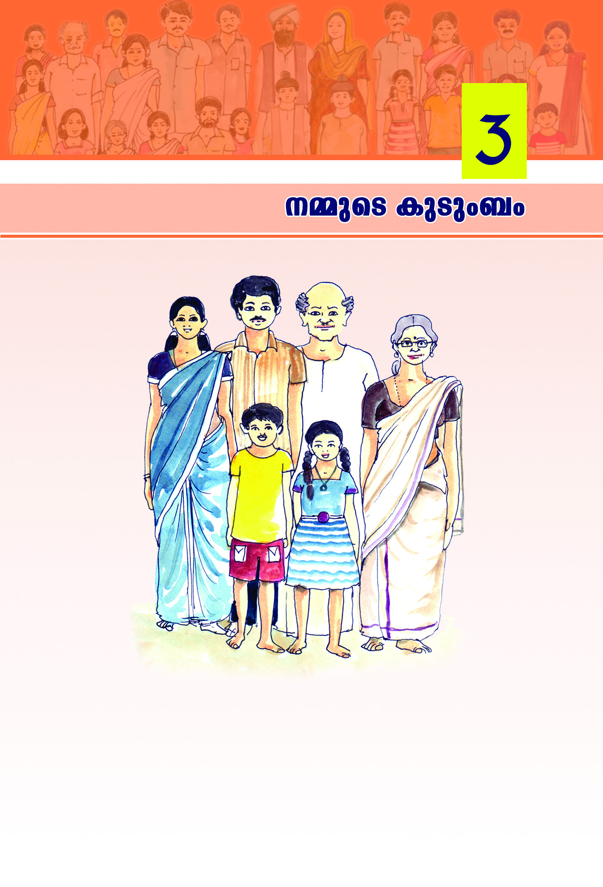
\ΩpsS IpSpw_w
29
29
\ΩpsS IpSpw_w
Nn{Xw I≠t√m. Cu IpSpw_Nn{X-Øn¬ Bsc√mamWp-≈Xv?
$
$
$
$
$
$
\nß-fpsS ho´n¬ Bscm-s°-bp≠v?
$ AΩ
$
$
$
$
$
Page 30
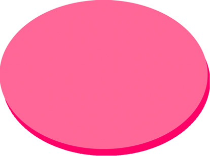
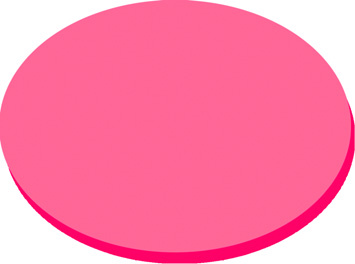
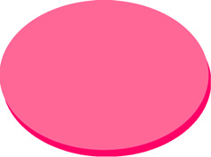
30
30
kmaq-ly-imkv{Xw V
kmaq-ly-imkv{Xw V
kaqlw
kap-Zmbw
hy‡n-Iƒ
IpSpw-_-߃
A—\pw AΩbpw a°fpw ASpØ _‘p-°fpw AS-ßp-∂-XmWv
IpSpw_w. Hmtcm hy‡nbpw GsX-¶nepw Hcp IpSpw-_-Ønse AwK-am-
W-t√m. \n߃ Ft∏m-gmWv Hcp IpSpw-_-Ønse AwK-am-bXv?
P\\w Hcmsf Hcp IpSpw-_-Ønse AwK-am-°p-∂p. km[m-c-Wb-mbn
P\\w apX¬ acWwhsc \mw IpSpw-_-Øn¬ Pohn-°p-Ibpw IpSpw_w
\sΩ kzm[o-\n-°p-Ibpw sNøp∂p. \ΩpsS hf¿®-bnepw s]cp-am-‰-
Ønepw IpSpw-_-Øn-\p≈ ]¶v hep-Xm-Wv.
\nß-fpsS \m´n¬ \nß-fpsS IpSpw_w am{X-amtWm D≈Xv? a‰p [mcmfw
IpSpw-_-߃ Ct√? Cßs\ ]e IpSpw-_-߃ tNcp-tºmƒ
kapZmbhpw ]e kap-Zm-b-߃ tN¿∂v kaq-lhpw D≠m-Ip-∂p.
IpSpw_w kaq-l-Øns‚ ASn-ÿm-\-L-SIw
kaq-l-Ønse Nn´-Ifpw (norms), acym-Z-Ifpw (manners) Pohn-X-co-Xn-Ifpw
BZy-ambn \mw ]Tn-°p-∂Xv IpSpw-_-Øn¬\n∂m-Wv. `£Ww, hkv{Xw,
]m¿∏nSw XpS-ßnb {]mY-anI Bh-iy-߃ \nd-th-‰p-∂Xv IpSpw-_amW.v
kvt\lhpw kpc-£n-X-Xzhpw IpSpw_w Dd-∏p-h-cp-Øp-∂p.
kmaqlnI_‘-߃°v XpS-°-an-Sp-∂Xpw Ah hf¿Øp-∂Xpw \ne-
\n¿Øp-∂Xpw IpSpw_amWv. AXp-sIm-≠mWv IpSpw-_sØ kaq-l-
Øns‚ ASn-ÿm-\-L-SIw F∂p ]d-bp-∂-Xv.
Ip™pÆn amjns‚ IhnX hmbn-°p:
Rm≥ Ip™pÆn
Fs‚ AΩ \mcm-b-Wn-bΩ
AΩΩ ]mdp-°p-´n-bΩ
AΩ-Ω-bpsS AΩtbm
C{X-tb-bp≈p Fs‚ Adn-hns‚ hep∏w
˛ F∂n-eqsS
˛ Ip™p-Æn-amjv
Page 31
\ΩpsS IpSpw_w
31
31
\ΩpsS IpSpw_w
Ip™p-Æn-am-jns‚ Ihn-X-bn¬ At±lw Xs‚ c≠p Xe-ap-d-bn¬s∏´
Bfp-I-fpsS t]cv ]cm-a¿in®Xv I≠n-t√. AXp-t]mse \nß-fpsS
A—s‚bpw AΩ-bp-sSbpw t]cp-Iƒ \n߃°-dn-bmat√m. A—s‚
amXm-]n-Xm-°-fpsS t]cpIfpw AΩ-bpsS amXm-]n-Xm-°-fpsS t]cpIfpw
\n߃°v Adn-bm-tam? Ah-cpsS amXm-]n-Xm-°-fpsS t]cp-Itfm?
F∂m¬ t]cp-Iƒ Is≠-Øm≥ {ian-°p. Xmsg ImWp∂ Nn{X-Øn¬
Ah FgpXn t\m°p. G‰hpw XmgsØ Ce-bn¬ \nß-fpsS t]sc-gp-
XWw:
IpSpw-_-hr£w
IpSpw_hr£-Øn¬\n∂pw \nß-fpsS F{X -X-e-ap-d-I-fpsS hnh-c-ß-
fmWv \n߃°v In´n-b-Xv? Ch-sc√mw Hcp-an-®mtWm Xma-kn-°p-∂Xv?
Page 32
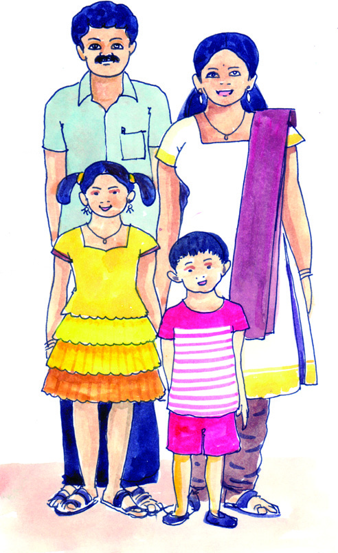
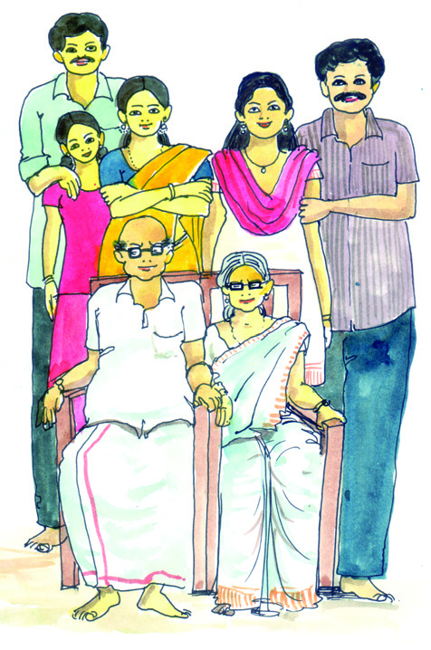
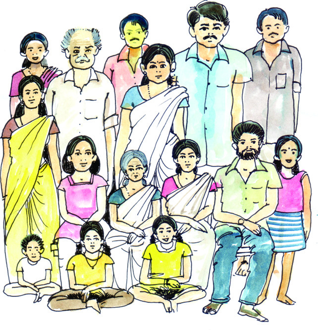
32
32
kmaq-ly-imkv{Xw V
kmaq-ly-imkv{Xw V
IpSpw-_- cq]o-I-cWw
P\\w Hcp- hy-‡n-sb- Ip-Spw-_-Ønse AwK-am-°p∂psh∂v I≠t√m.
IpSpw-_-Ønse Nne AwK-߃ c‡-_-‘-Øm¬ H∂n-®-h-cm-Wv.
Hcmƒ°v A—-t\mSpw AΩ-tbmSpw ktlm-Z-c-ß-tfm-Sp-ap≈ _‘w
c‡_-‘-am-Wv. F∂m¬ hnhm-l-Øn-eq-sSbpw Bfp-Iƒ _‘p-°-fm-
Im-dp-≠v.
\nß-fpsS A—\pw AΩbpw hnhmlw hgn-bt√ Hcp IpSpw-_-Ønse
AwK-ß-fm-b-Xv?
a°-fn-√mØ ]e Zº-Xn-Ifpw Ip´n-Isf ZsØ-SpØp hf¿Øm-dp-≠v.
apI-fn¬ ]-d-™-h-bpsS ASn-ÿm-\-Øn¬ IpSpw_w cq]o-I-cn-°-
s∏Sp∂Xv Fß-s\-sb√mamsW∂v Is≠-Øp-I.
$
c‡-_‘ØneqsS
$
$
IpSpw-_-߃ hnhn-[-Xcw
Nn{Xw 1
AWp-Ip-Spw_w
Nn{Xw 3
Iq´pIpSpw_w
Nn{Xw 2
hnkvXrXIpSpw_w
Page 33
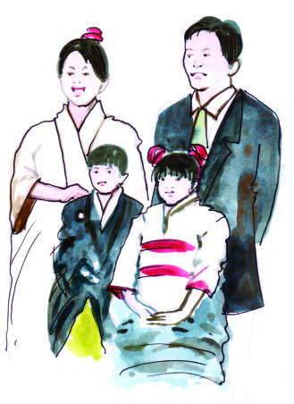
\ΩpsS IpSpw_w
33
33
\ΩpsS IpSpw_w
aq∂p- Ip-Spw-_-ß-fpsS Nn{X-߃ \¬In-bn-´p-≈Xv I≠t√m. Cu
IpSpw_-߃ XΩn-ep≈ hyXymkw F¥mWv?
Nn{Xw H∂n¬ A—\pw AΩbpw a°fpw am{X-ta-bp-≈p. Cß-s\-bp≈
IpSpw-_-amWv AWp-Ip-Spw_w (Nuclear family). Nn{Xw c≠n¬ A—\pw
AΩbpw a°fpw Ah-cpsS IpSpw-_-hp-am-Wp-≈-Xv. Aß-s\-bp≈ AWp-
Ip-Spw-_-߃ H∂n-®p-Xm-a-kn-°p-∂-XmWv hnkvXrX IpSpw_w (Extended
family). Nn{Xw aq∂nse IpSpw_w hfsc hep-Xm-Wv. aq∂p\mev Xe-ap-d-
Iƒ B ho´n¬ Hcp-an-®p- Xm-a-kn-°p-∂p. CXv Iq´p-Ip-Spw-_-am-Wv (Joint
family).
\nß-fpsS \m´n¬ CØ-c-Øn¬ aq∂p \mev Xe-ap-d-bnse Bfp-Iƒ
Hcp-an®v Xma-kn-°p∂ hoSp-I-fp-t≠m? Hc-t\z-jWw Bbmtem?
\nß-fpsS hoSn-\p- Np-‰p-ap≈ 10 IpSpw-_-߃ kμ¿in®v At\zj-Ww
\SØn t\m°p. \n߃ kμ¿in® IpSpw-_Ønse AwK-ß-fpsS
FÆw, AwK-߃ XΩn-ep≈ _‘w, Xe-apd-I-fpsS FÆw XpS-ßnbh
]cn-tim-[n®v F{X IpSpw-_-߃ AWp-Ip-Spw-_w, hnkvXrX-IpSpw_w,
Iq´pIp-Spw_w F∂n-h-bn¬s∏Sp∂p F∂v Is≠-Øp-I.
IpSpw-_-Øns‚ khn-ti-j-X-Iƒ
Page 34

34
34
kmaq-ly-imkv{Xw V
kmaq-ly-imkv{Xw V
Nn{X-߃ {i≤n-®t√m. hyXykvX cmPy-ß-
fnse IpSpw-_-ß-fpsS Nn{X-ß-fm-Wnh.
\ΩpsS \m´n¬ am{X-a√ IpSpw-_-ap-≈Xv
F∂v hy‡-am-bt√m. temIØv F√m-bn-
SØpw IpSpw-_-ß-fp≠v. tZi `mj-Iƒ°v
AXo-X-ambn IpSpw_w F√m kaq-l-ß-
fnepw \ne-sIm-≈p-∂p. CXv IpSpw-_-Øns‚
Hcp khn-ti-j-X-bm-Wv.
IpSpw-_mw-K-ßsf H∂n®p\n¿Øp∂ LS-I-߃ Fs¥m-s°-
bm-Wv?
$
kvt\lw
$
]c-kv]-c-_-lp-am\w
$
$
ta¬∏-d™ sshIm-cnI_‘ßfmWv IpSpw-_-Øns‚ as‰mcp
khntijX.
\nß-fpsS IpSpw-_-Øn¬ F{X AwK-ß-fp≠v? Hcp hoSn\v Dƒs°m-
≈m≥ Ign-bp∂ ]cn-an-X-amb AwK-߃ am{Xta Hcp IpSpw-_-Øn¬
D≠m-Ip-I-bp-≈p. CXv IpSpw-_-Øns‚ Hcp khn-ti-j-X-bm-Wv.
Xmsg-∏-d-bp∂ tPmen-Iƒ \nß-fpsS IpSpw-_-Øn¬ Bscm-s°-bmWv
sNøp-∂Xv? ]´n-I -]q¿Øn-bm-°p:
{Ia
ho´p-tPm-en-Iƒ
sNøp-∂-bmƒ
\º¿
1
]mNIw
2
tXm´w \\-bv°¬
3
XpWn- I-gp-I¬
4
IS-bn¬\n∂p km[-\-߃ hm߬
5
ap‰w- hr-Øn-bm-°¬
Page 35
\ΩpsS IpSpw_w
35
35
\ΩpsS IpSpw_w
]q¿Øn-bm-°n-b ]´nIbn¬ \n∂v, ho´p-tPm-en-I-fn¬ IpSpw-_-Ønse
F√m AwK-ßfpw ]¶m-fn-I-fm-Ip∂psh∂v t_m[y-s∏-´-t√m.
Cßs\bp≈ Iq´mb {]h¿Ø-\-߃ IpSpw-_-Øns‚ sI´p-d-∏n\v
A\nhm-cy-am-Wv. IpSpw-_-Øns‚ Hcp khn-ti-j-X-bmb Cu DØ-c-
hmZnXz-t_m[amWv IpSpw-_sØ \ne-\n¿Øp-∂Xv.
IpSpw-_-Øns‚ ta¬kqNn-∏n® khn-ti-j-X-I-fpambn _‘-s∏´h "F'
tImf-Øn¬ sImSp-Øn-cn-°p-∂p. Ahsb "_n' tImf-hp-ambn
tbmPn∏n°p-I.
F
tZi `mj-Iƒ°v AXoXw
]cn-an-X-amb hep∏w
sshIm-cn-I-_-‘-߃
DØ-c-hm-Zn-X-z-t_m[w
IpSpw-_-Ønse AwK-߃
FÆ-Øn¬ Ipdhv
kvt\lw, hm’-eyw,
kpc-£n-X-Xz-t_m[w
Npa-X-e-Iƒ \n¿h-ln-°¬
F√m-bn-SØpw IpSpw-_-ap≠v
_n
IpSpw-_-Øns‚ [¿Ω-߃
\nß-fpsS ASn-ÿm\ Bh-iy-߃ Fs¥m-s°-bmWv? `£Ww,
hkv{Xw, ]m¿∏nSw F∂nh-bt√?
km[mcWbmbn Cu Bh-iy-߃ \nd-
th-‰p-∂Xv IpSpw-_-am-Wv.
\n߃°v amXm-]n-Xm-°-tfmSpw Ah¿°v
\nß-tfmSpw kvt\l-ap-≠v. IpSpw-_mw-K-
߃°nS-bn¬ \ne-\n¬°p∂ ]c-kv]-cm-
{i-bXzhpw kl-I-cW at\m-`m-hhpw \√
hy‡n-I-fm-Im≥ \sΩ klm-bn-°p-∂p.
\n߃ inip-hm-bn-cp-∂-t∏mƒ s]cp-am-dn-
bn-cp-∂Xpt]mse-bmtWm Ct∏mƒ s]cp-am-dp-∂Xv? inip-hm-bn-cn-°p-tºm-
gp≈ s]cp-am‰coXn-b√ hep-Xm-Ip-tºmƒ Hcp hy‡n {]I-Sn-∏n-°p-∂Xv.
IpSpw_mwK-߃°nS-bn¬
kvt\]q¿h-amb Hc-¥-co£w
krjvSn-°p-I-bmWv
IpSpw-_-Øns‚ [¿aw
˛ HmKvt_¨
Page 36
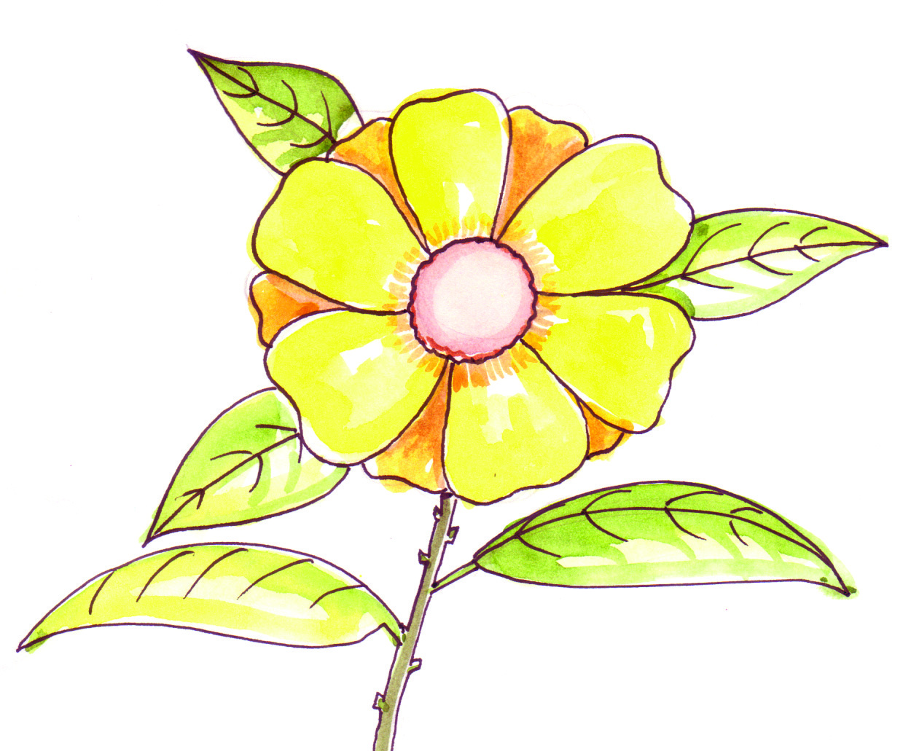
36
36
kmaq-ly-imkv{Xw V
kmaq-ly-imkv{Xw V
A®-S-°w (discipline), acymZ (manners), ]¶p-h-bv°¬ (sharing) XpS-ßnb
KpW-߃ IpSpw_ØneqsS \ap°v e`n°p∂p.
\n߃°p kpJ-an-√m-Xm-Ip-tºmƒ ho´nencn-°-W-sa∂v B{K-ln-
°mdnt√? ho´n¬ In´p∂ kpc-£n-XXzt_m[w \ap°v as‰m-cnS-Øp-
\n∂pw ]q¿W-ambn e`n-°m-dn√. IqSp-X¬ kpc-£n-X-Xzw \¬Ip-∂Xv
IpSpw-_-am-Wv. kpc-£n-X-Xz-t_m[w Dd-∏p-h-cp-ØpI F∂Xv IpSpw-_-
Øns‚ [¿Ω-am-Wv.
36
IpSpw-_-
Øns‚
[¿a-߃
kpc-£n-XXz
t_m[w
kvt\lw
hm’eyw
s]cp-am‰
ioe-߃
ASn-ÿm\
Bh-iy-߃
apI-fn¬ sImSp-Øn-´p≈ Nn{Xw \nco-£n®v Xmsg-∏-d-bp∂ DZm-l-c-W-
ß-fn¬ IpSpw-_w -\n¿h-ln-°p∂ [¿Ωw GsX∂v Is≠-Øn Fgp-XpI:
$
\anX kvIqƒ Xpd-°m≥ ImØn-cn-°p-I-bm-Wv. Ahƒ-°p≈
]T-t\m-]-I-c-W-߃ A—≥ hmßn-s°m-Sp-Øn-´p≠v.
$
a‰p- tPm-en-Øn-c-°p-Iƒ°n-S-bnepw an∂p-hns‚ ]nd-∂m-fn\v AΩ
Ahƒ°v G‰hpw CjvS-ap≈ ]mbkw D≠m-°n-s°m-Sp-Øp.
Page 37
\ΩpsS IpSpw_w
37
37
\ΩpsS IpSpw_w
$
apXn¿∂-hsc _lp-am-\n-°Wsa∂pw F√m-h-tcmSpw kvt\l-
tØmsS CS-]-g-IWsa∂pw A∏q-∏≥ Ft∏mgpw D]-tZ-in-°m-dp-≠v.
$
kvIqfn¬ t]mIpw-hgn A]-I-S-Øn¬s∏´ \nj BZyw Bh-iy-s∏-
´Xv ho´n¬ t]mI-W-sa-∂m-Wv.
{][m\ ]T-\-t\-´-ßfn¬ s]Sp-∂h
$
kmaq-lnI_‘-Øns‚ ASn-ÿm-\hpw hy‡nXzhnIm-k-Øns‚
{]mY-anI thZnbpw IpSpw-_-am-sW∂v hniZoIcn°p∂p.
$
IpSpw_cq]o-I-c-W-Øns‚
ASn-ÿm\w
Xncn®dn™v
hy‡am°p∂p.
$
IpSpw_-Øns‚ khn-ti-j-X-Iƒ hni-Zo-I-cn-°p∂p.
$
IpSpw-_-Øns‚ [¿Ωß-ƒ A]{KYn°p∂p.
$
kaq-l-Øns‚ ASn-ÿm\-L-S-I-amWv IpSpw_w.
$
c‡-_-‘-Øn-eqsStbm hnhml_‘-Øn-eq-sS-tbm, ZsØSp°-
en-eq-sStbm Hcp IpSpw_w cq]o-I-cn-°-s∏-Sp-∂p.
$
IpSpw-_-L-S-\-bpsS ASn-ÿm-\-Øn¬ IpSpw-_ßsf AWp-
IpSpw_w, hnkvXrXIpSpw-_w, Iq´p-Ip-Spw_w F∂n-ßs\ Xcw-
Xncn®n-´p-≠v.
$
km¿h-eu-InI-X (universality), sshIm-cnI_‘w, ]cn-an-X-amb
hep∏w, DØ-c-hm-Zn-Xz-t_m[w F∂nh IpSpw-_-Øns‚ khn-ti-
j-X-I-fmWv.
$
kpc-£n-XXzw Dd-∏p-hcp-ØpI, ASn-ÿm-\m-h-iy-߃ \nd-th-‰p-I,
kvt\l-hm-’-ey-߃ \¬IpI, \√ s]cp-am-‰-io-e-߃ hf¿Øn-
sb-Sp-°pI XpS-ßnbhbmWv IpSpw-_-Øns‚ [¿a-߃.
kw{Klw
Page 38
38
38
kmaq-ly-imkv{Xw V
kmaq-ly-imkv{Xw V
hne-bn-cp-Ømw
A—-\-Ω-am-cpsS Npa-X-e-Iƒ
\nß-fpsS Npa-X-e-Iƒ
$
AΩp ho´n¬ FØn-bm¬ kvIqfnse hnti-j-߃ A—-\-ΩamtcmSv
]¶phbv°pw.
\n߃ Fs¥√mw Imcy-ß-fmWv IpSpw-_-Ønep-≈htcmSv
]¶phbv°m-dp≈Xv? eLphnh-cWw Xbm-dm-°p-I.
$
\n߃ A—-\-Ω-am¿°v Fs¥√mw klm-b-ß-fmWv sNbvXp-
sImSp°m-dp-≈Xv?
amXm-]n-Xm-°ƒ \n߃°p-th≠n Fs¥√mw Imcy-߃ sNbvXp
Xcp-∂p?
]´n-I-s∏-Sp-ØpI.
XpS¿{]h¿Ø-\-߃
$
IpSpw_-Øns‚ [¿Ω-ß-sf-°p-dn®v \mw a\- n-em-°n-b-t√m.
C∂sØ IpSpw-_-߃ F{X-tØmfw Ch ]men-°p∂p F∂ hnj-
bsØ Bkv]-Z-am°n ]{X-hm¿Ø-I-fpsS ASn-ÿm-\-Øn¬ Hcp
N¿® \S-Øp.
$
IpSpw__‘-ß-ƒ hy‡-am-°p∂ IY-Iƒ, Ihn-X-Iƒ, Nn{X-߃
Ch tiJ-cn®v ]Xn∏v Xbm-dm-°p.
Page 39
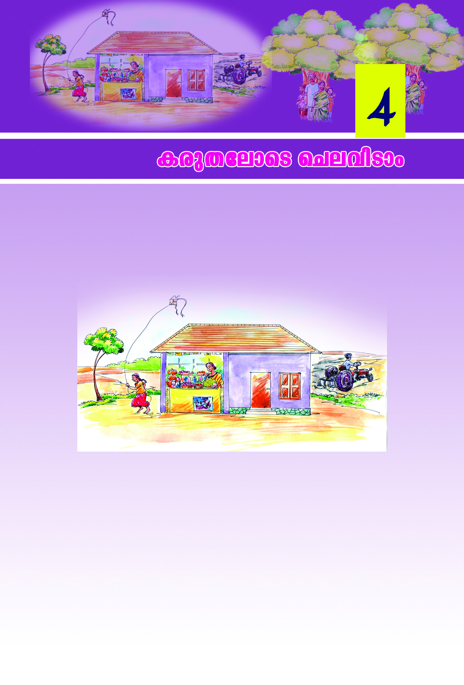
Icp-X-temsS sNe-hn-Smw
3939
Icp-X-temsS sNe-hn-Smw
IpSpw-_sØ°p-dn®pw AXns‚ kmaqlnI{]m[m-\ysØ°p-dn®pw
Ign™ A[ym-bØn¬ ]Tn-®t√m. IpSpw-_-hp-ambn _‘-s∏´ a‰p Nne
Imcy-߃ \ap°v ]cn-tim-[n-°mw.
Nn{Xw {i≤n°p. Cu IpSpw-_-Ønse AwK-ß-fmb A—≥, AΩ, aIƒ
F∂n-h¿ hnhn[ {]h¿Ø-\-ßfn¬ G¿s∏-´n-cn-°p-∂Xv ImWm-at√m.
Ah¿ Hmtcm-cp-Øcpw Fs¥m-s°-bmWv sNøp-∂-Xv?
$
A—≥ {SmIvS¿ D]-tbm-Kn®v \new Dgp-∂p.
$
$
Chcn-¬ Bscm-s°-bmWv hcp-am\w e`n-°p∂ {]h¿Ø-\-ß-fn¬
G¿s∏-´n-cn-°p-∂-Xv?
Page 40
4040
kmaq-ly-imkv{Xw V
kmaq-ly-imkv{Xw V
CXp-t]m-se-bp≈ hnhn[ {]h¿Ø-\-߃ sNøp∂Xphgn-bmWv
IpSpw_-߃°v hcp-am\w e`n-°p-∂Xv. hcp-am\w e`n-°p∂ kmº-ØnI
{]h¿Ø-\-ß-fn¬ (Economic Activity) H∂mWv sXmgn-¬. sXmgn-ens‚
{]Xn-^-e-w Iqen-bmtbm iº-f-amtbm BWv e`n-°p-∂Xv. IpSpw-_-
Øns‚ Hcp hcp-am\t{kmX- mWv sXmgn¬. hcp-am\w hyXykvX coXn-
bn¬ e`n-°p-∂-Xp-t]mse hcp-am\w e`n-°p-hm-\p≈ am¿K-ßfpw hyXy-
kvX-am-Wv.
c≠v IpSpw-_-ßsf kw_-‘n® Nne hnh-c-ßfmWv NphsS \¬In-bn-
´p-≈-Xv:
Cu IpSpw-_-ß-fpsS hcp-am-\- t{km-X pIƒ hyXy-kvX-am-Wt√m.
{]Xn^ew {]Zm\w sNøp∂ {]b-Xv\tam hkvXp-h-I-Itfm BWv
hcp-am-\- t{km-X- v. DZm-l-c-W-Øn\v I®hSw Hcp hcp-am\t{kmX pw
AXn¬\n∂p e`n-°p∂ em`w hcp-am-\-hp-am-Wv.
IpSpw_w 1
1. Irjn-∏Wn
2. .................................
IpSpw_w 2
1. Xø¬tPmen
2. .................................
kXojv Hcp I¿j-I-sØm-gnem-fn-
bmWv. `mcy, c≠v Ip´n-Iƒ,
kXojns‚ amXmhv F∂o AwK-ß-
fmWv IpSpw-_-Øn-ep-≈-Xv. kz¥-
ambn hoSpw A©p-sk‚ v ÿehpw
D≠v. kXo-jns‚ `mcy kpaXn ASp-
Øp≈ kvIqfnse `£Ww ]mIw
sNøp∂ tPmenbn¬ G¿s∏-´n-cn-
°p∂p. kXo-jns‚ tcmKn-bmb
amXm-hn\pth≠ kwc-£Ww
IpSpw_mw-K-߃ \¬Ip∂p.
IpSpw_w 1
`mcybpw aq∂v a°fpw Dƒs∏Sp-
∂-XmWv jmPn-bpsS IpSpw_w.
Xø¬°S \S-ØpIbmWv
jmPn. jmPn-bpsS aqØ-a-I\v
]{Xw hnX-cWw sNøp∂
tPmen-bmWv. Cfba°ƒ
hnZym¿Yn-\nI-fmWv. jmPn-
bpsS `mcy ko\ kz¥w `h-\-
Ønse tPmen-Iƒ sNøp-∂p.
hmS-I-ho-´n-emWv IpSpw_w
Xma-kn-°p-∂-Xv.
IpSpw_w 2
kXo-jn-s‚bpw jmPn-bp-sSbpw IpSpw-_-ßfpsS hcp-am\ t{kmX- p-
Iƒ Fs¥-√m-amWv? ]´nI ]q¿Øn-bm-°p.